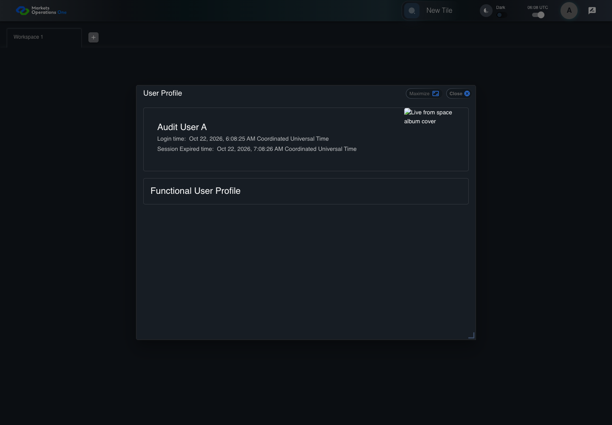
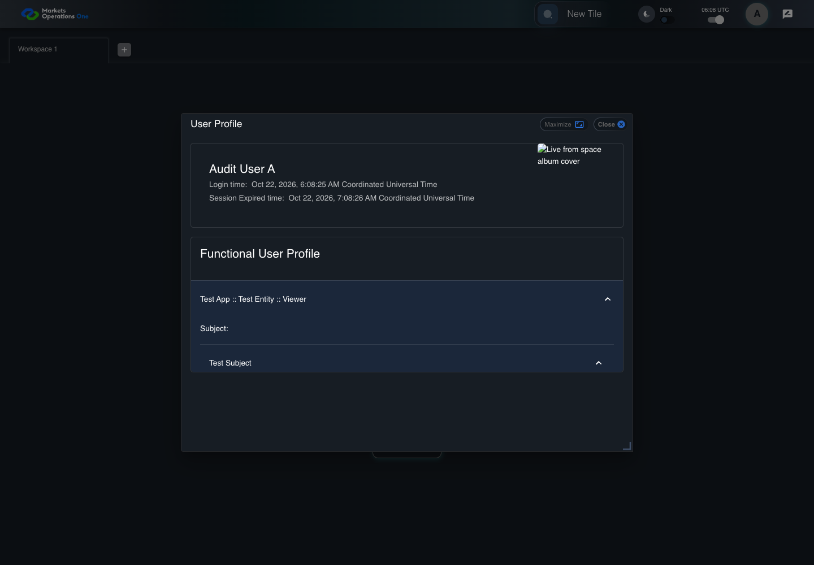

UI-PREF-009 expand a role and its entitlement actions
PASS · application/run-050/ui-pref-009-expand-a-role-and-its-entitlement-actions-53f4d6431b75-attempt-1 · ACTUAL_APPLICATION_LOCAL_SERVICES
Actual current React shell. Controlled login, validation, and activity renewal responses supply UI-USER-01, catalog, and entities. A controlled SystemJS React container displays routes and parameters. Local fixture SVGs replace catalog images. Identity, entitlements, and business tenant behavior are not established.
2026-10-22T06:08:25.327Z to 2026-10-22T06:08:29.563Z
Assertions and result · Artifact manifest · Exact run inputs and source hashes
Result SHA-256:84634fc762567868d868709238be82569dc577af1a6f14f8345da4702376a015Screenshot capture: CAPTURED. Named frames: 9.
Step screenshot bindings: COMPLETE. 8/8 canonical steps have execution screenshots.
Bindings measure structural coverage only. They do not establish screenshot content quality or relevance.
Screenshot content review: NOT_REVIEWED. Recorded context: 0/9 frames. Identical image bytes: 2 repeated frames. Recorded context does not establish human visual review.
Canonical step timeline
Given User A is authenticated as fixture UI-USER-01 with the case-specific permissions
Execution: PASSED.
1. step-01 Visible state after step 1: Given User A is authenticated as fixture UI-USER-01 with the case-specific permissions
2026-10-22T06:08:27.035Z · 1440×1000
Step: /Users/lushevol/code/github/ratan-release-impact/workbench/tasks/ui-test-coverage-20261022/test-cases.md:7626
SHA-256:fcdb7e886745751817c5a9e551fd47a62899d6497092ca8f80a5c9e3d9e7d6d1And entity Test Entity has applicationName Test App, roleName Viewer, subject Test Subject, and entitlement action READ
Execution: PASSED.
2. step-02 Visible state after step 2: And entity Test Entity has applicationName Test App, roleName Viewer, subject Test Subject, and entitlement action READ
2026-10-22T06:08:27.118Z · 1440×1000
Step: /Users/lushevol/code/github/ratan-release-impact/workbench/tasks/ui-test-coverage-20261022/test-cases.md:7627
SHA-256:fcdb7e886745751817c5a9e551fd47a62899d6497092ca8f80a5c9e3d9e7d6d1Image bytes match frame 1. An unchanged image can be valid for consecutive assertions. This match does not establish correct step content.
When User A clicks icon button named "User Profiles" inside the shell application bar
Execution: PASSED.
3. step-03 Visible state after step 3: When User A clicks icon button named "User Profiles" inside the shell application bar
2026-10-22T06:08:27.332Z · 1440×1000
Step: /Users/lushevol/code/github/ratan-release-impact/workbench/tasks/ui-test-coverage-20261022/test-cases.md:7628
SHA-256:039ca6fa3560bbaf63829661d57b64623617332d7b43255924d6ffb17bf85b52And User A clicks menu item with text "Click to view user profile details" inside the user menu with ID "menu-appbar-avatar"
Execution: PASSED.
4. step-04 Visible state after step 4: And User A clicks menu item with text "Click to view user profile details" inside the user menu with ID "menu-appbar-avatar"
2026-10-22T06:08:27.536Z · 1440×1000
Step: /Users/lushevol/code/github/ratan-release-impact/workbench/tasks/ui-test-coverage-20261022/test-cases.md:7629
SHA-256:bbc5e83f9b934c564d77bbc1c7a8b7a312188c519f5875ec4a1677d8b432eceaAnd User A clicks button named "Test App :: Test Entity :: Viewer" inside the Functional User Profile group inside the dialog named "User Profile"
Execution: PASSED.5. step-05 Visible state after step 5: And User A clicks button named "Test App :: Test Entity :: Viewer" inside the Functional User Profile group inside the dialog named "User Profile"
2026-10-22T06:08:28.524Z · 1440×1000
Step: /Users/lushevol/code/github/ratan-release-impact/workbench/tasks/ui-test-coverage-20261022/test-cases.md:7630
SHA-256:79452b9ef3b54eefb5840815666f52a8843cbcd170fee3dee3e946b42fc0868bAnd User A clicks button named "Test Subject" inside the expanded Test Entity accordion inside the dialog named "User Profile"
Execution: PASSED.
6. step-06 Visible state after step 6: And User A clicks button named "Test Subject" inside the expanded Test Entity accordion inside the dialog named "User Profile"
2026-10-22T06:08:28.673Z · 1440×1000
Step: /Users/lushevol/code/github/ratan-release-impact/workbench/tasks/ui-test-coverage-20261022/test-cases.md:7631
SHA-256:d71016a7cbc5edf54efa7709499fa38600e8fb639d04914c553bdaeca0484eacThen text with text "Action:" inside the expanded Test Subject accordion in the dialog named "User Profile" is visible
Execution: PASSED.7. step-07 Visible state after step 7: Then text with text "Action:" inside the expanded Test Subject accordion in the dialog named "User Profile" is visible
2026-10-22T06:08:28.748Z · 1440×1000
Step: /Users/lushevol/code/github/ratan-release-impact/workbench/tasks/ui-test-coverage-20261022/test-cases.md:7632
SHA-256:dcd9897e519dddb521202ce189407bc9cd2bf51a8bb9d63c1b00ac3a356e987eAnd chip with text "READ" inside the expanded Test Subject accordion in the dialog named "User Profile" is visible
Execution: PASSED.8. step-08 Visible state after step 8: And chip with text "READ" inside the expanded Test Subject accordion in the dialog named "User Profile" is visible
2026-10-22T06:08:28.824Z · 1440×1000
Step: /Users/lushevol/code/github/ratan-release-impact/workbench/tasks/ui-test-coverage-20261022/test-cases.md:7633
SHA-256:cf9a7ed33d78f16c64d3a4f6fbdaf2f373f898e76b58647dc62cae15d81f5b57
Additional named frames

The final visible state after the named test assertions.
2026-10-22T06:08:28.953Z · 1440×1000Step: Test source: /Users/lushevol/code/github/ratan-release-impact/workbench/e2e/audit-specs/catalog-profile-expanded.spec.ts:290
SHA-256:
cf9a7ed33d78f16c64d3a4f6fbdaf2f373f898e76b58647dc62cae15d81f5b57Image bytes match frame 8. An unchanged image can be valid for consecutive assertions. This match does not establish correct step content.
Screenshots establish visible state only. Assertions and traces support functional claims.